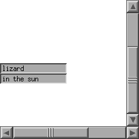
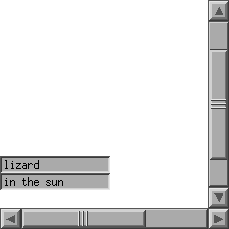

scrollable
scrollable has two scroll bars that control the position of a scrollable glyph (a button). Based on code from Chen Wang at the University of Toronto.
 
next example program
scrollfield
up to
ivtools
home page.